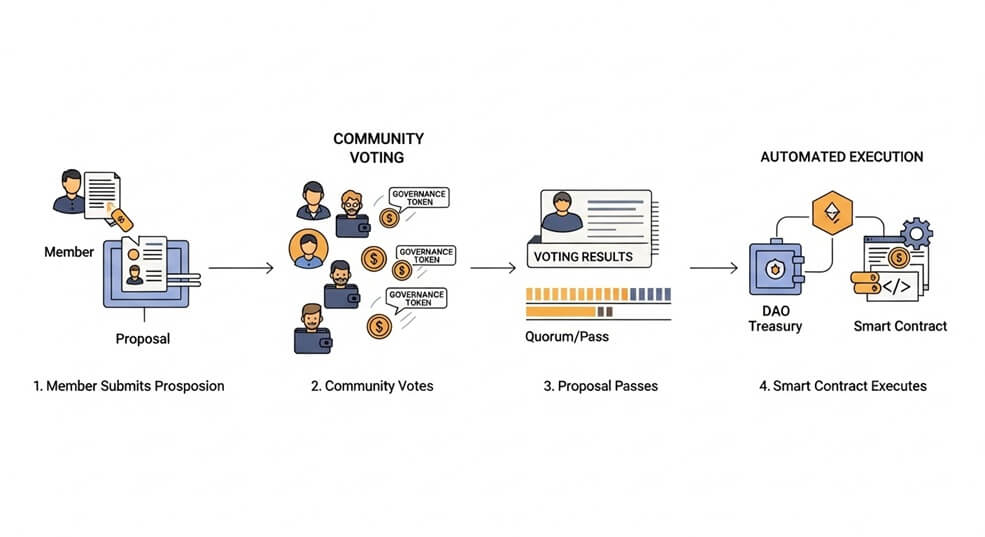

Key Takeaways
- Blockchain-based governance: A DAO is a digital organization run by rules written into blockchain code, with no single leader. Every major decision is made by community vote.
- Member voting with tokens: Governance tokens act like voting shares in a cooperative—holders can submit proposals and cast votes.
- Transparency and automation: All votes and transactions are public on the blockchain. Approved actions execute automatically through smart contracts.
- Global, open participation: Anyone with an internet connection and the DAO’s token can take part in governing the group.
- Innovative but experimental: DAOs unlock new ways to organize and fund projects, yet the technology is still young and carries significant risks.
What Is a DAO?
A decentralized autonomous organization (DAO) is an online, community-led group whose rules and treasury are managed by smart contracts on a blockchain. Instead of a CEO or board, members collectively propose and vote on actions. When a proposal passes, the code enforces it exactly as written.
Think of a DAO like a digital cooperative or club—essentially a “group chat with a shared bank account.” The chat rules are locked in code, and every expense requires a vote.
How DAOs Work
Most DAOs issue governance tokens. Each token typically equals one vote, though some DAOs weigh votes differently. Any member—or members who meet certain criteria—can post a proposal. A proposal might request funds for a project, change a system parameter, or hire a service provider.
During the voting period, members cast their votes from their crypto wallets. If the proposal meets the required threshold (for example, a simple majority and a minimum turnout), the DAO’s smart contract automatically executes the decision— releasing funds, changing settings, or updating rules—without human intervention.
Examples:
- MakerDAO – Token holders manage parameters of the DAI stablecoin system, such as collateral requirements and stability fees.
- ConstitutionDAO – A temporary DAO formed in 2021 that raised over $40 million from thousands of contributors to bid on a rare copy of the U.S. Constitution.
Advantages and Challenges of DAOs
Advantages
- Decentralized power: No single person can dictate outcomes; decisions are shared among token holders.
- Transparency: Budgets, votes, and results are visible on the blockchain for anyone to audit.
- Global reach: People worldwide can coordinate quickly and pool resources without traditional barriers.
- Code-enforced spending: Funds move only when agreed voting conditions are met, reducing the risk of unauthorized use.
Challenges
- Concentration of voting power: If a few members hold most tokens, they can dominate decisions.
- Technical vulnerabilities: Bugs in smart contracts can lead to large losses, as seen in the 2016 “The DAO” hack.
- Coordination difficulties: Large, distributed groups may struggle to reach timely agreements.
- Legal uncertainty: Many jurisdictions lack clear rules for DAOs, leaving questions about liability and compliance.
Risks & Important Considerations
Security & Exploits
If a DAO’s smart contracts contain flaws, attackers can drain the treasury within minutes. Independent security audits help but cannot guarantee safety.
Governance Risks
Voting outcomes depend on active, informed participation. Low turnout or token concentration can enable a small group to pass harmful proposals.
Legal & Regulatory Uncertainty
Some regions have begun offering legal frameworks for DAOs, but most have not. Participants may face unclear tax treatment or personal liability.
No Endorsement: Any DAOs mentioned are for illustration only. LIFT does not endorse joining or funding any specific DAO.
The following links are provided for educational and informational purposes only. Literacy & Innovation in Financial Technology Alliance (LIFT) does not endorse any of the organizations, products, services, or opinions presented on these external sites. LIFT is not responsible for the accuracy or content of external sites. We encourage you to conduct your own research.
Further Reading & Sources
Disclaimer: This article is for educational purposes only and does not constitute financial advice.